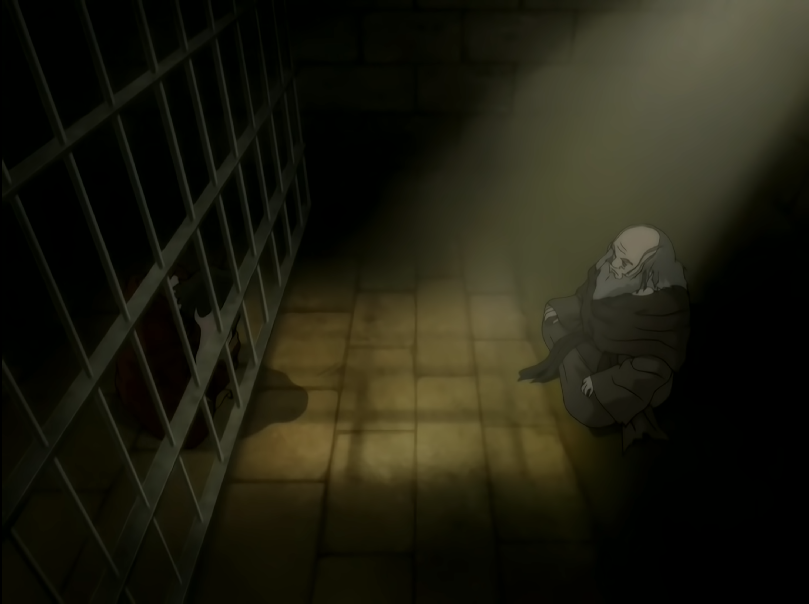

What is visual media?
Visual media uses three of our five senses to deliver either already told stories in a reimagined way, or create an entirely new story from scratch, either way, visual media can enhance the qualities of any story when motifs are reinforced with the appropriate imagery, tone, facial expressions and many more details of varying subtlety.
Cinematographic Storytelling
While cinematography is a term generally reserved for live-action filming, the same principles of cinematography apply to all forms of visual storytelling regardless of its medium. We’ll go through a couple examples of common cinematography techniques that can quietly or brazenly enhance the value of a scene, shot, or series of shots as a cohesive story.
The Rule of Thirds
First to understand the rule of thirds, you have to imagine dividing the frame by thirds both vertically and horizontally.
Using this 3x3 grid, we can evaluate what parts human eyes are drawn to as the points of interest. The four strongest points
of interest are the points of the centermost square in the grid. Orienting images, characters, and negative space around these
points of interest can incite subtleties that affect a viewers perception of a scene. For example, take this scene from Avatar: The Last Airbender:

Without context, you would think Zuko is the one imprisoned while Iroh is free because of how the light shines in from behind him – a poised man who’s calm and collected, while Zuko is in the dark clutching his head in torment, barred from reaching the light. The light forms a negative space in the middle of the screen, occupying the major points of interest to make this imagery very poignant. Within the context of the story, this imagery emphasizes that Zuko is imprisoned by the mentality that has been forced on him, except that prison exists only in his mind. Zuko is mentally captive but “free” to walk where he pleases as the prince of his nation, while Iroh is in captivity as a traitor, but free in mind and spirit knowing he stuck to what he truly believes is right.
This is by no means an exhaustive use of the rule of thirds; many other non-cinematographic techniques can be combined with the rule of thirds to create masterful moments, but this example was chosen to show that even the simplest applications of the rule of thirds can be incredibly potent.
Allegorical Religious Imagery
Allegory is defined as a narrative technique, but allegorical imagery pertains to visual media the same as its narrative counterpart: Characters, events, and details that symbolize deeper meanings or abstract concepts, often conveying moral, social, or political messages. Religious allegory simply adds the facet of the respective religion, or religion as a whole being referenced. Common religious allegories refer to Mother Theresa as a paragon of kindness and nurturing from Christianity, Buddha as the paragon of patience, enlightenment, or omniscience, and even Greek mythology with the Ouroboros symbolizing the cycle of life, death, and rebirth. Religious imagery can serve as the allegory in and of itself in visual media, so it doesn’t need to be baked into the story to be effective as a motif reinforcement.
Color Symbolism
Color symbolism refers to the use of color to represent ideas, emotions, or cultural meanings. The symbolism of colors vary based on culture, context, and personal associations, but certain colors often carry common symbolic meanings. There are also positive and negative connotations depending on the context the color is used. In western culture, white tends to symbolize purity, innocence, or cleanliness while in eastern cultures it is associated with mourning and the afterlife, while in both cultures white can symbolize an uncanny sterility or emptiness. Colors have been used to symbolize things in stories all throughout history and even pre-history, but being aware of the common associations can increase appreciation of how a story is illustrated, along with how it is told.